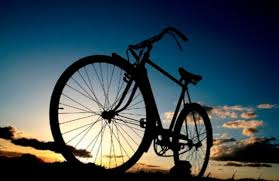

El 19 de abril, se celebra el Día Mundial de la Bicicleta con el objetivo de promocionar
este medio de transporte y llamar la atención sobre los derechos de los ciclistas.
Se celebra este día, porque el 19 de abril de 1943 el doctor Albert Hofmann, padre del LSD,
ingirió a propósito 250 µg de LSD. Tras ingerir la sustancia, Hofmann sintió que le costaba
hablar de forma inteligible y pidió a su asistente de laboratorio, que estaba al tanto del
experimento, que le acompañase en su viaje a casa en bicicleta, pues, por las restricciones
del período de guerra, no había automóviles disponibles.
Durante el viaje a casa, el estado de Hofmann se agravó, posteriormente escribiría en su diario
que todo lo que había en su campo de visión ondulaba, distorsionado como una imagen en un espejo
cóncavo. Aunque avanzaba velozmente, tuvo la sensación paradójica de que permanecía inmóvil. Cuando
llegó a casa, llamó a un doctor y pidió a su vecina algo de leche, creyendo que le ayudaría a
recuperarse.
Cuando llegó el médico, no encontró ningún síntoma físico anormal, salvo las pupilas extremadamente
dilatadas. Tras pasar varias horas aterrorizado, convencido de que un demonio había poseído su
cuerpo, de que su vecina era una bruja y de que el mobiliario de su casa le amenazaba, el doctor
Hofmann pensó que había enloquecido por completo.
Durante su ‘viaje’, las impresiones acústicas (como el ruido de un automóvil que pasaba) se
transformaban en imágenes. Hofmann, al día siguiente despertó fresco y con la mente clara, aunque
con cierto cansancio corporal.Desayunó con una sensación de bienestar y vida renovada, y encontró
la comida deliciosa. Mientras caminaba por el jardín, notó que todos sus sentidos “vibraban con
una sensibilidad superior”, que duró durante todo el día.
Desde entonces, todos los años, el 19 de Abril en todo el mundo la gente coge su bici para rememorar
aquel “primer viaje” en bicicleta del doctor Hofmann.
En la actualidad, existen unas 800 millones de bicicletas en el mundo y son utilizadas como medio
de transporte principal o como vehículo de ocio. De cara al cuidado de las personas representa un
completo ejercicio físico mientras que para el medio ambiente, su uso significa una disminución de
las emisiones de CO2 a la atmósfera y una contribución para frenar el cambio climático.
